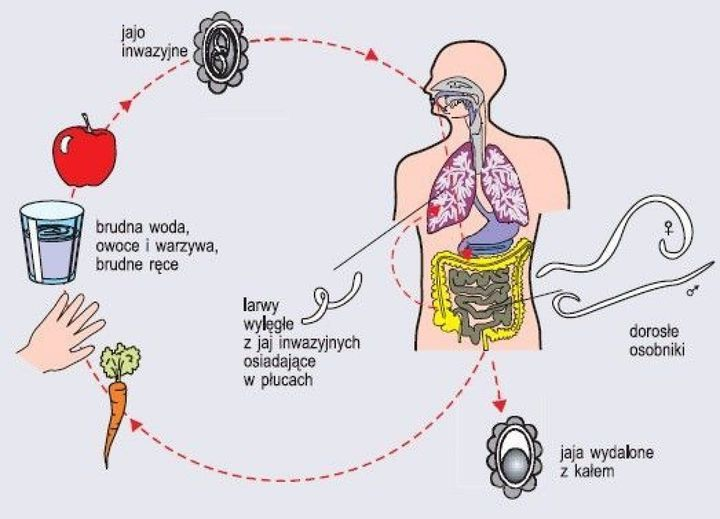

Pasożytami możemy zarazić się od drugiego człowieka – zarówno bezpośrednio jak i pośrednio, przez korzystanie ze wspólnych rzeczy a nawet zjedzeniu owoca na którym siedziała mucha‼️
Wiadomo gdzie lubią siadać muchy więc nie muszę szczegółowo tłumaczyć 😉🤭
Pasożyty mogą także pochodzić od domowego zwierzaka szczególnie np.psa biegającego po podwórku. Dlatego jeżeli pies czy kot mieszkają w domku trzeba go kilka razy do roku odrobaczać.
Objawy mogą być bardzo różne, dlatego trudno je czasem powiązać z pasożytami. Alarmujące powinno być:
🌱przewlekłe osłabienie organizmu,
🌱chudnięcie,
🌱sińce pod oczami,
🌱apatia bądź przeciwnie
🌱zwiększona pobudliwość
🌱 nerwowość a nawet agresja
🌱niespokojny sen
🌱zgrzytanie zębami
🌱bóle i zawroty głowy,
🌱swędzenie skóry, wysypki,
🌱brak apetytu lub
🌱nadmierny apetyt,
🌱nudności, wymioty,
🌱bóle brzucha,
🌱alergie,
🌱duże zapotrzebowanie na słodkie
🌱problemy z koncentracją co powoduje problemy w szkole u dzieci
Jeżeli masz któryś z wymienionych objawów nie zwlekaj ‼️‼️rozpocznij rozsądną kurację odrobaczającą zaczynając o zmiany nawyków żywieniowych 💪💪👍
🌿Odrobaczenie to wstęp do zwiększenia skuteczności każdej terapii 🌿🍃
Toksyny pozostawione przez pasożyty znacznie zakłócają procesy komórkowe w naszych organizmach‼️😱
Dlatego zachęcam do skorzystania z diagnostyki biorezonans💮💮💮 aby zlokalizować miejsce i rodzaj pasożytów bytujących w organizmie.
